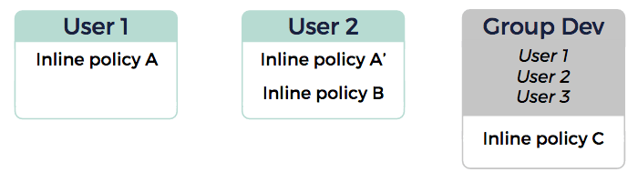
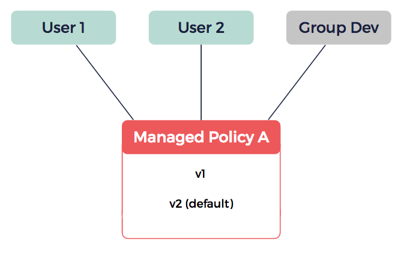

About Policies
Policies enable you to grant permissions to users or groups. In a policy, you define the actions you allow or deny a user or group.
You can define these permissions in inline policies, that are embedded in a user or group, or in managed policies, that you can attach to several users or groups and detach at any time.
Permissions and Policies
Permissions enable you to manage and control who can perform which actions on your account. These permissions are contained in policies using policy documents you define when creating policies.
When you create a user or a group, they have no permissions by default, meaning that they cannot perform any action. To give permissions to a user or group, you need to use policies. For more information, see About EIM Users and About EIM Groups.
Permissions enable you to specify what actions the user or group can perform. For example, you can give permission to perform the CreateVolume and AttachVolume actions. For more information, see the Policy Documents and Statements section below.
|
Resource creators do not automatically have permissions to access and perform actions on the resources they create. Users only have permissions that have been explicitly granted to them. For example, if a user has the permission to create virtual machines (VMs), but not to describe VMs, they are not able to describe the VMs they create unless you grant them the permission to do so. |
Inline and Managed Policies
You can give permissions to users or groups using either inline or managed policies:
-
Inline policies are embedded in a user or group, and are part of the EIM identity.
-
Managed policies are standalone policies that you can attach to several users or groups, and detach at any time.
As permissions are incremental, you can apply both managed and inline policies simultaneously, and users can benefit simultaneously from policies individually applied to them and from policies applied to groups they belong to.
Inline Policies
An inline policy only applies to the EIM identity (user or group) it is embedded in and cannot be shared with another EIM identity. You can however create copies granting the same permissions embedded in other EIM identities, but they are independent from one another.
You can add an inline policy to a user or group at any time. However, you cannot modify an existing inline policy. To update the permissions contained in inline policies, you must delete the inline policy and add a new one to the user or group, preventing you from reverting a policy to an earlier state. For more information, see Working with Inline Policies.
|
If you delete a user or a group, all their embedded inline policies are also deleted. |
You can use inline policies when you want to ensure that a policy is only assigned to one intended EIM identity and cannot inadvertently be assigned to another one. A same user or group can have several embedded inline policies. You can list all the inline policies embedded in a specified user or group. However, you cannot list all inline policies for your account.

In the above schema, the following inline policies are applied:
-
User 1: Inline policies A and C
-
User 2: Inline policies A', B and C
Inline policies A and A' may contain similar permissions, but are independent from one another.
-
User 3: Inline policy C
Managed policies
Managed policies are standalone policies that you can attach to several users or groups, and detach at any time. This enables you to create a library of policies in your account, and attach them to users or groups depending on their profile. To do so, you can list all the managed policies available for your account. For more information, see Working with Managed Policies.
|
You can attach up to two managed policies to a user or a group at the same time, if they need different permission profiles. |
You can modify a managed policy at any time, which creates a new policy version. You can then set this new policy version as the default one, that is, the active one applied to users or groups the policy is attached to. Managed policies enable you to centrally manage permissions for all users or groups the policy is attached to, as the same policy document version is applied to all of them. For example, it is impossible to apply a v1 version to a user and a v2 version to another user. For more information, see Editing Managed Policies Using Policy Versions.
As previous versions are not deleted when you create a new one, you can revert to an earlier version of a policy at any time. For more information, see Setting the Default Version of a Managed Policy.
If you detach a policy from a user or a group, the permissions it contains are not applied anymore, but the policy is not deleted. To delete a managed policy, you first need to detach it from all users and groups it is attached to, and then delete it manually. For more information, see Deleting a Managed Policy.

In the above schema, the v2 version of managed policy A is applied to User 1, User 2, and users that are in the Dev group. Any modification in this policy is applied to all of these users.
Policy Documents and Statements
Policy documents contain permissions that are organized in statements (one permission per statement). For each statement, you can define the following elements:
-
Actions: The actions that the user or group can perform.
-
Effect: Whether the permissions is granted (
allow) or denied (deny). By default, all permissions are set todeny. -
Statement ID (SID): A unique identifier for the statement chosen by the user who creates it.
For more information, see EIM Policy Elements.
To modify policy documents, you can only:
-
For inline policies, delete the current policy and add a new one to the user or group.
-
For managed policies, create a new policy version and set it as the default one.
Related Pages